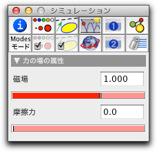

磁場

CindyLabでは、描画された平面に垂直な磁場を与えることができます。磁場は、 多角形 モードと同様に、多角形の領域として加えられます。 "場の力(磁束密度)" 、"粒子の速度"、 "電荷"と生じる力の関係は、次の式で与えられます。
| 力 = (磁束密度 x 速度) ∗ 電荷 |
ここで、×は外積です。場が描画された面に垂直と見なされるので、力は粒子の運動方向に垂直に働きます。したがって、荷電粒子は円形軌道を描きます。次の図は、磁場のある領域に発射された荷電粒子の軌跡を表します。
 |  |
|
| 磁場中に荷電粒子を 発射する | 円形軌道を描く |
CindyLab における磁場には、場での摩擦力をシミュレートする第2の力を有効にします。摩擦力を受けた粒子は速さに比例した力によって遅くなります。摩擦力と粒子の速度の関係は次の方程式で与えられます。
| 力 = – 摩擦力 ∗ 速度 |
物理学では、磁場を素粒子の崩壊を観察するのによく使います。たとえば、電気的に中性な粒子が、一方は正電荷、他方は負電荷を持つ2つの粒子に崩壊するとき、磁場の中では、摩擦力がないならば円軌道に、摩擦力があるならば螺旋軌道を描きます。この効果が、霧箱中の粒子崩壊を観察して分析する物理研究で使われます。 次の図は、実際の霧箱での粒子崩壊と、 CindyLab と CindyScript でシミュレーションした粒子崩壊の比較です。
 |  |
|
| 実際の粒子崩壊 | シミュレートされた粒子崩壊 |
磁場のインスペクタ
インスペクタでは、磁場における場の力と 摩擦力の値を調整することができます。特に、負の値を割り当てることによって磁場の方向を逆転することが可能です。
 |
| 磁場インスペクタ |
磁場と CindyScript
CindyLabの他の要素と同様、磁場には CindyScript によって読み書きのできるいくつかの要素があります。次のリストはアクセス可能なものを示します。
- strenth: 場の強さ (実数, 読み書き可)
- friction: 多角形領域における摩擦力 (実数, 読み書き可)
- simulate: シミュレーションの on/off (ブール値, 読み書き可)
次も参照してください
Page last modified on Tuesday 13 of March, 2012 [13:39:08 UTC].
The original document is available at
http://doc.cinderella.de/tiki-index.php?page=Magnetic%20FieldJ